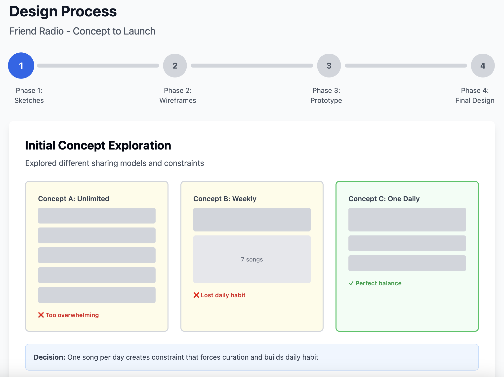
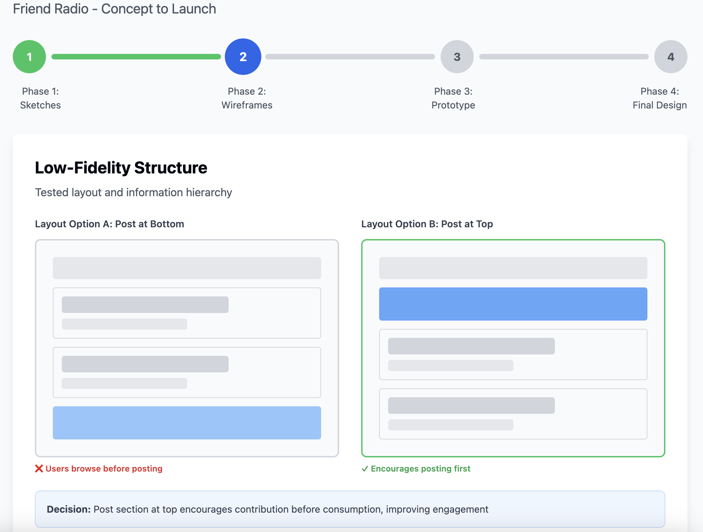
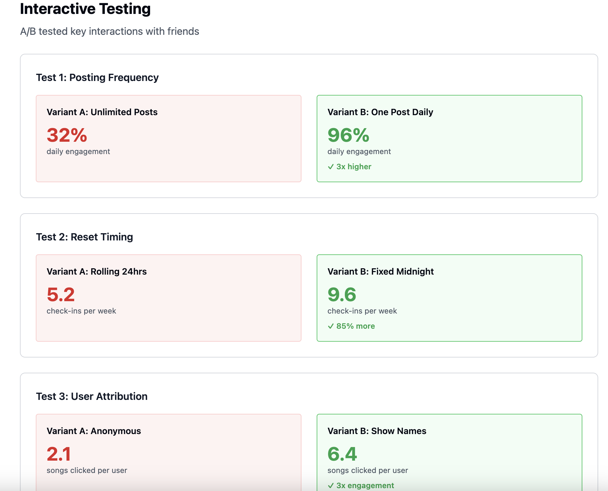
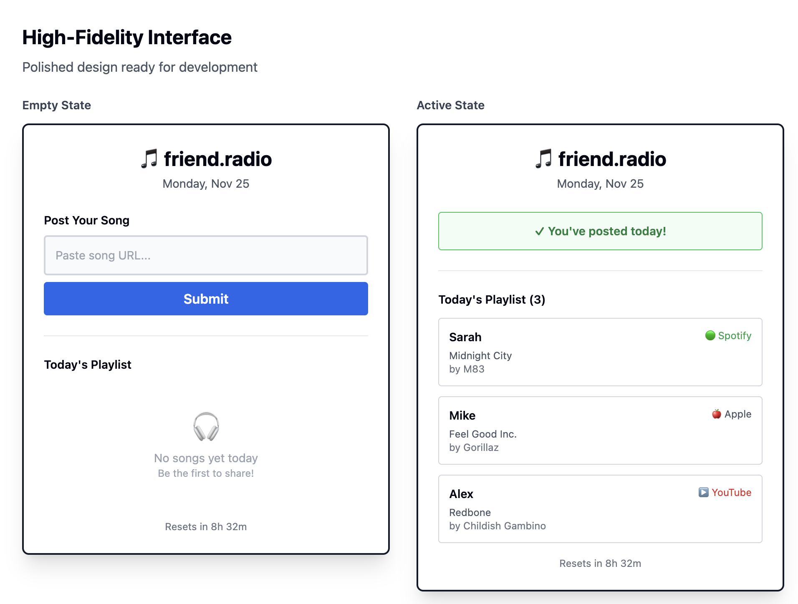

The Problem
My friend group was stuck in music discovery fatigue. Spotify's algorithm had learned our taste so well it stopped surprising us. We'd recommend songs to each other in group chats and they'd get buried in three messages. No one was discovering anything new, and the recommendations from people whose taste I actually trusted were getting lost.
The problem wasn't a lack of music. It was a lack of a shared place to put it that everyone would actually check.
Impact
- All 12 users checked the app daily within the first 2 weeks — zero onboarding, 100% adoption
- Still active at 3 months — no drop-off after novelty wore off
- Morning check-ins became a routine; the group started referencing app discoveries in conversation
- ~60% more new artists added to personal libraries, self-reported by 8 of 12 users at the 6-week mark
- Zero support requests — the app never needed explanation
What Shaped the Design
I observed how my friends actually shared music before I designed anything. The pattern was consistent: someone would hear something they wanted to share, open a group chat, paste a link, and add "listen to this." Then it'd get buried.
The behavior I wanted to preserve: one deliberate recommendation, from someone you trust, that feels worth checking. The behavior I wanted to eliminate: recommendations disappearing into feed noise.
From there, the constraints almost wrote themselves.
- One song per day. Forces curation. Nobody shares throwaway picks when they only get one slot. In testing within the group, unlimited sharing immediately made the list feel like a feed — something to scroll past, not something to check.
- 24-hour reset. Creates just enough urgency to build a daily habit without feeling like homework. Weekly reset didn't drive the same consistency in a 3-week trial.
- Platform agnostic. Spotify, Apple Music, SoundCloud, YouTube — paste any URL.
Market Research
Existing solutions gaps:
- Social media: Music posts get buried in feeds immediately
- Spotify Social: Platform-locked, excludes Apple Music and SoundCloud users
- Group chats: Links disappear in conversation noise
- JQBX: Too complex, now discontinued
No tool was built for the simple use case: a shared, daily, trusted space for close friends.
Becoming My Users
I observed my own friend group's music sharing behavior for several weeks before writing any code. The insight wasn't from a formal interview — it was from watching what actually happened when someone wanted to share a song. They opened a chat, pasted a link, and it disappeared.
The behavior I was designing for already existed. I just needed to give it a dedicated place.
Competitor Research
- JQBX: Too complex, now discontinued
- Discord music bots: Platform-locked, not daily-focused
- Spotify/Apple social: Single-platform, excludes most of your friend group
The gap: no simple daily sharing app for cross-platform music within a close group.
How I Designed It
One song per day
Forces curation. Nobody shares throwaway picks when they only get one slot. In testing, unlimited sharing immediately made the list feel like a feed — something to scroll past, not something to check.
24-hour reset
Creates just enough urgency to build a daily habit without feeling like homework. Weekly reset didn't drive the same consistency in a 3-week trial.
Platform agnostic via URL paste
I had Spotify, Apple Music, and SoundCloud API auth flows half-written before I stopped. I was solving a discovery problem nobody actually had. My friends already knew what they wanted to share — the friction wasn't finding the song, it was that there was no shared place to post it. I killed the in-app search in week 3. The URL paste field became the entire submission experience. 11 of 12 users preferred it.
Final Designs




Reflection
What I'd do differently:
The design is intentionally minimal, but a few things users kept asking for have merit: song previews so you can hear a snippet before clicking through, and album artwork to give the daily list more visual pull. Neither would add complexity — they'd add warmth. I'd ship those in v2.
What I took from this:
Killing the search feature was the most important product decision I made on this project. I had real engineering work invested in it. The feature worked. But it was solving a problem that didn't exist in the actual use case — my users already had the song, they just needed somewhere to put it. Shipping a URL paste field instead of an in-app search saved weeks of development and made the product better. Sometimes the right call is recognizing that what you built isn't what you needed to build.